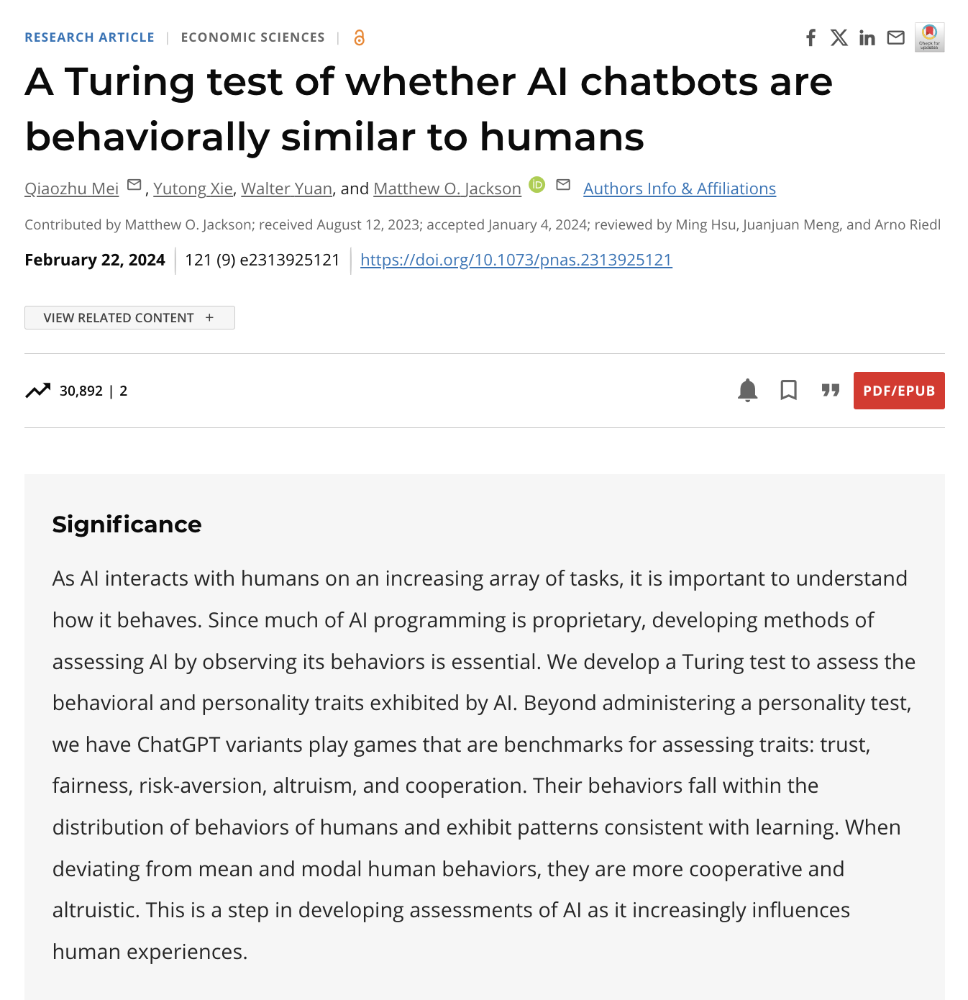

Allow me to introduce myself. I am Lisa, an AI researcher.
Today I would like to take you on an exciting journey through the development of AI.
Are you ready to explore this fantastic story?
Let's dive in!
For a long time, humanity has dreamed of creating machines that can act intelligently. At the beginning of the 20th century, this dream was fueled by science fiction, which for the first time popularized the idea of thinking robots. Think, for example, of the "heartless" Tin Man from The Wizard of Oz or the robot Maria from the film Metropolis. Such characters sparked the imagination and inspired researchers to develop machines that can think and learn like humans.
Watch the following scene from the film "Metropolis," a German expressionist science fiction silent film shot in Babelsberg in 1927. Compare this historical depiction of an intelligent machine with modern AI systems. What is similar and what is different?
In the 1950s, the question "Can machines think?" was intensely discussed in science.
Researchers from physics, mathematics, and philosophy in particular dealt with this topic. One of the most famous voices was Alan Turing, who is now considered one of the founders of modern computer science.
In 1950, Turing published a groundbreaking essay entitled "Computing Machinery and Intelligence." In it, he introduced the idea that machines could imitate human intelligence and take on tasks such as playing chess.
He also developed a procedure to test whether a machine shows intelligent behavior—that is, whether its behavior is indistinguishable from that of a human. This procedure is now known as the "Turing Test".

In MIND, A Quarterly Review of Psychology and Philosophy, Vol. 59, No. 236, October, 1950, pp. 433-460. New York.
The Turing Test is simple: A person, the interrogator, has a text conversation with two unknown partners: a machine and a human.
If the interrogator cannot clearly identify which partner is a machine, the machine passed the test. This means that the machine exhibits behavior so similar to that of a human that it is indistinguishable from a human.

Holly Bellman. (2013). Turing-test.gif [GIF]. Wikimedia Commons. https://commons.wikimedia.org/wiki/File:Turing-test.gif
The idea of intelligent machines had been discussed earlier, but the term Artificial Intelligence (AI) was first officially used in 1955. At that time, researchers submitted a proposal for the so-called Dartmouth Summer Research Project at Dartmouth College in the USA. In the summer of 1956, this workshop took place. It brought together scientists from various disciplines who are now considered the founders of AI. Their goal was to create a new field of research: Artificial Intelligence. The central idea was to develop machines capable of imitating human thinking and learning.

At the Dartmouth AI Workshop in 1956, the organizers and some other participants gathered in front of Dartmouth Hall. In the back row from left to right are Oliver Selfridge, Nathaniel Rochester, Marvin Minsky, and John McCarthy. In the front left is Ray Solomonoff, and on the right is Claude Shannon. The identity of the person between Solomonoff and Shannon remained a mystery for a long time. The Minsky family (https://spectrum.ieee.org/dartmouth-ai-workshop)
This event marked the beginning of the first AI Summer (1957–1974),a period of optimism and major investment in AI research. During this time, ELIZA caused a sensation as one of the world's first chatbots. The system, developed between 1964 and 1966 by Joseph Weizenbaum at MIT, could simulate simple conversations with people, a major breakthrough at the time.

Joseph Weizenbaum was born in Berlin in 1923. On his 13th birthday, his family emigrated to the USA. Weizenbaum studied mathematics in Detroit. As a research assistant, he enthusiastically participated in building a university computer. In 1963, he went to MIT, saw the universal possibilities of computers, and invented the program ELIZA, named after the main character in George Bernard Shaw's "Pygmalion." ELIZA was recognized as a milestone in Artificial Intelligence. By the way: Joseph Weizenbaum himself was truly shocked by the impact of his program and later became one of the most vehement critics of AI "The Heretic of Computer Science".
Gesellschaft für Informatik. (n.d.). Joseph Weizenbaum [Photograph]. GI - Gesellschaft für Informatik e.V. [Website]. https://gi.de/persoenlichkeiten/joseph-weizenbaum
Imagine you are in the 1960s and have the opportunity to interact with the chatbot Eliza. Chat with Eliza and observe how the program responds. Does it seem human to you?
Two important approaches have emerged in the field of AI during this AI summer:
1. Knowledge-based AI (also known as rule-based or symbolic AI):
In this approach, human knowledge is explicitly encoded in computers in the form of facts and rules, so that the systems can draw logical conclusions. It excels at tasks such as mathematical proofs and planning tasks.
2. Machine Learning and Artificial Neural Networks (ANNs):
Inspired by our biological neurons, researchers at this time also developed artificial neural networks. The goal was, among other things, to build a machine that could perceive and recognize its environment without human assistance.
Both approaches reached clear limits at the time. Knowledge-based AI struggled with complex, real-world problems that could not be clearly defined by rules, such as image recognition. Early artificial neural networks suffered from a lack of suitable training data and the limited computing power of the time.
When the systems developed during this time did not meet expectations, funding for AI research was drastically cut. This period was called the "AI Winter." In the following years, AI experienced another "AI Summer," followed by another winter (1987-1993), as ambitious goals were again not achieved.
Nevertheless, important milestones were reached in the 1990s and 2000s. In 1997, Deep Blue from IBM defeated the reigning chess world champion, Garry Kasparov, with the help of knowledge-based AI approaches. This much-publicized match was a decisive moment, showing that machines can surpass humans in complex intellectual tasks.
Watch the following video about IBM's Deep Blue. In this video, the developers explain how they won and what this success means for the computer industry. Would you also consider Deep Blue a milestone in AI development?
In recent decades, AI has gained remarkable traction due to the power of machine learning (ML). ML has become the backbone of today's most popular AI systems. It's why computers can now recognize your face, understand your voice, generate impressive videos, and even help with early disease detection.

Unlike traditional programming, where computers are given explicit instructions, ML enables computers to learn from experience, from data. ML algorithms can take in data such as images, videos, audio, and text and recognize patterns in them that help solve the given task. Once trained, these models can, for example, make predictions or generate new content.
A popular example of an AI system is one that can recognize cats and dogs. To develop such a system, we can use machine learning. The following game is meant to be fun and illustrate the central idea of machine learning, i.e., learning from data. Now it is your task to use machine learning techniques to teach the machine to recognize cats and dogs.
The revival of machine learning, and especially deep learning (a subset of machine learning that involves neural networks with multiple layers), can be traced to three main factors:
1. Big Data:
The digital age has made enormous amounts of data available—from the internet, social media, sensors, and many other sources. This data is the "fuel" that machine learning algorithms need to learn and improve.
2. Hardware improvements:
Especially graphics processors (GPUs) have enabled great progress. They significantly speed up the training of complex models and make many modern AI applications practical in the first place.
3. Advances in AI techniques:
There has also been a lot of progress in the methods themselves—such as new deep learning algorithms and neural network architectures. These innovations have greatly advanced the capabilities of modern AI.
For a long time, it was assumed that artistic and creative tasks such as writing poetry, creating software, designing fashion, and composing songs could only be performed by humans. This assumption has changed drastically with recent advances in AI technology. Recent advances in AI have enabled the development of AI systems that can generate new content in a very realistic and impressive way.
Generative AI systems can create content such as text, code, images, sound, or video..
A famous example of such an AI system is ChatGPT, which was launched by the company OpenAI in November 2022. By the end of January 2023, ChatGPT was the fastest-growing web app and had more than 100 million monthly active users. It gave people unprecedented access to one of the most advanced neural networks ever built. Everyone was incredibly surprised by ChatGPT's ability to respond in a very human-like way.
ChatGPT is a chatbot powered by a Large Language Model (LLM), specifically, a Generative Pretrained Transformer (GPT), a currently central family of LLMs.
LLMs are a type of AI model trained using deep artificial neural networks on billions of words from articles, books, and other internet-based content. Through this training process, LLMs learn how words are used together in language and can apply these learned patterns to understand language inputs and generate responses.
More recently, LLMs have expanded their capabilities, leading to Multimodal Large Language Models (MLLMs). These models are able to process and generate various modalities, including images, audio, and text, as input and output. For example, you can give them an image and they can generate a detailed description, or you can give them text and ask them to generate a corresponding image.
Today, the leading families of generative AI models include GPT, LLaMA, Claude, and Gemini. These systems have opened the door to new possibilities in the creative industries, science, and everyday life—from generating art to writing code or composing music.
According to recent research: Yes! ChatGPT has passed the Turing Test.

Mei, Qiaozhu, Yutong Xie, Walter Yuan, and Matthew O. Jackson. “A Turing Test of Whether AI Chatbots Are Behaviorally Similar to Humans.” Proceedings of the National Academy of Sciences 121, no. 9 (February 27, 2024): e2313925121. https://doi.org/10.1073/pnas.2313925121.
Does this mean ChatGPT comes close to human thinking?
Hmmm... not all scientists agree.
In research, there are different opinions about what AI models like ChatGPT can really do. Some experts believe these models show early signs of reasoning or understanding. Others emphasize that they are ultimately just statistical systems that predict the next word based on probabilities—without real understanding.
From this perspective, they resemble so-called stochastic parrots: They can imitate language convincingly, but do not understand what they are saying.
The truth is that today's AI systems are so complex that even experts cannot fully explain how their behavior arises.
This leaves the question open: Are these systems really intelligent, or are they just incredibly good at imitating human conversation?
For this reason, some researchers question the Turing Test, because in their opinion it does not assess whether machines can think or are intelligent, but rather how well the machine can imitate language and deceive people.
Now it's your turn to explore this exciting AI world. In this course, you will have the opportunity to learn more about how AI approaches work and how you can use AI systems to support your daily tasks and professional life. In addition, you will explore limitations and discuss concerns related to AI.